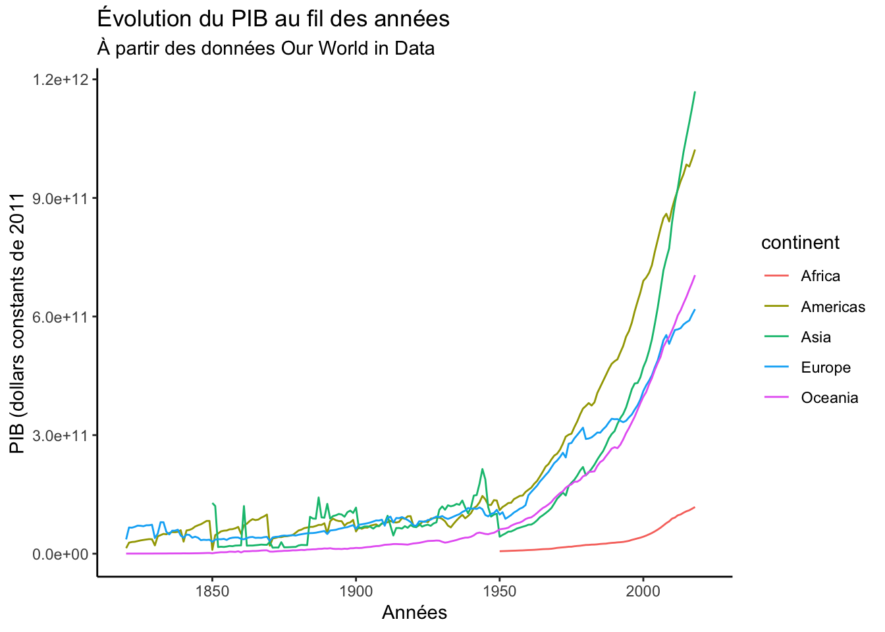
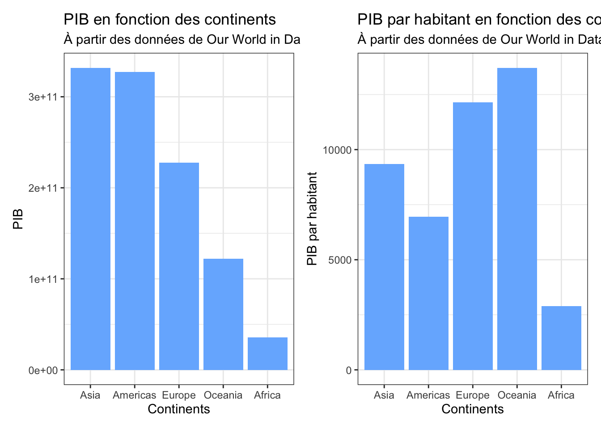
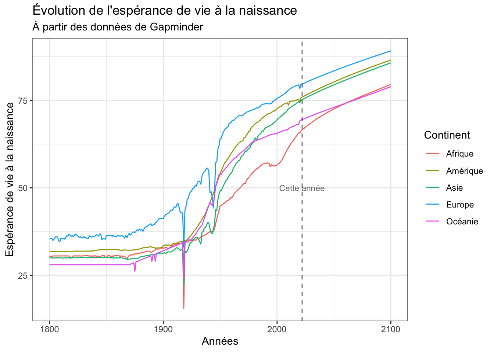
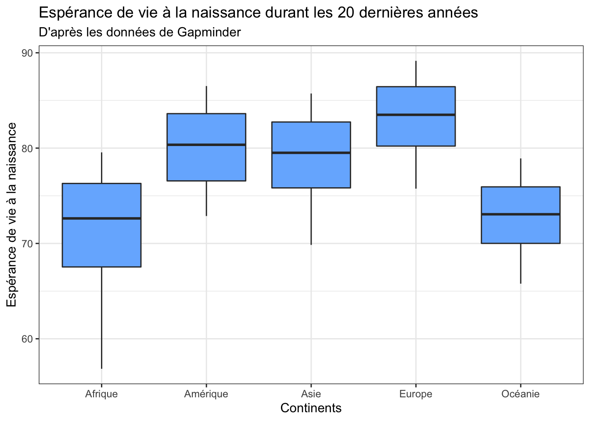

Exploration des données
Analyse descriptive des banques de données importées
![]()
Banque de données sur les émissions des CO2 et les gaz à effet de serre.
Cette banque de données contient de nombreuses informations sur les pays depuis 1850. Elle contient 46 523 observations et 74 variables. On y retrouve les pays, leur population, leur PIB, et leurs émissions de dioxyde de carbone et gaz à effets de serre.
- Le PIB
À première vue, on peut constater les différents facteurs qui influents les émissions de dioxyde de carbone et des gaz à effets de serre. On retrouve notamment l’utilisation du ciment, du charbon, du gaz, du méthane, du nitrate, de la combustion, et autres. Ces variables vont être utiliser plus tard dans l’analyse. J’aimerais d’abord me concentrer sur le PIB des pays et des continents car cette variable nous permet de constater la santé économique du pays.
Code
# Choix de variables et ajout de continents
co_2_data2 = co_2_data %>%
select(country, year, population, gdp, ends_with("per_capita"), primary_energy_consumption, total_ghg)%>%
mutate(continent = countrycode(co_2_data$iso_code, "iso3c", "continent"))
# Variables manquantes
missing_co2 = co_2_data2 %>%
select(country, continent) %>%
filter(!complete.cases(.))
# Retrait des continents dans la colonne des pays
co_2_data3 = co_2_data2 %>%
drop_na(continent)
co_2_data3 = as_tibble(co_2_data3)
# Évolution du PIB au fil du temps entre les continents
co_2_data4 = co_2_data3 %>%
group_by(continent, year) %>%
summarise(gdp = mean(gdp, na.rm = TRUE)) %>%
arrange(gdp)
ggplot(co_2_data4,
mapping = aes(x = year, y = gdp, color = continent)) +
geom_line()+
scale_x_continuous(limits = c(1820,2021))+
labs(title = "Évolution du PIB au fil des années",
subtitle = "À partir des données Our World in Data",
x = "Années",
y = "PIB (dollars constants de 2011") +
theme_classic()
On constate que le PIB a évolué positivement au cours des années pour tous les continents. On voit une croissance considérable pour tous les continents excepté pour l’Afrique où la croissance du PIB est plus lente. L’augmentation soudaine du PIB est dû à la révolution industrielle dans les années 1950. Celle-ci a permis le passage d’une économie agraire vers une économie industrielle avec de nouvelles technologies plus productives. Le graphique nous indique également que l’Amérique a connu une dominance économique jusque dans les années 2000 où l’Asie a pris le dessus.
- PIB par habitant
Le PIB est une bonne mesure économique mais qu’en est-il du PIB par habitant et comment se compare-t-il au PIB?
Code
# Ajout de la variable du PIB par habitant
co_2_data_pib_per_cap = co_2_data3 %>%
mutate(gdp_per_capita = gdp/population)
# Moyenne du PIB/habitant par pays
co_2_data5 = co_2_data_pib_per_cap %>%
group_by(country) %>%
summarise(gdp_per_capita = mean(gdp_per_capita, na.rm = TRUE)) %>%
ungroup()
# Les pays ayant un PIB par habitant faible
pib_bas = co_2_data5 %>%
arrange(gdp_per_capita)
head(pib_bas)| country | gdp_per_capita |
|---|---|
| Burundi | 817.7813 |
| Guinea | 834.7425 |
| Malawi | 859.9126 |
| Ethiopia | 955.0743 |
| Democratic Republic of Congo | 971.2861 |
| Chad | 991.8454 |
Code
#Les pays ayant un PIB par habitant élevé
pib_haut = co_2_data5 %>%
arrange(- gdp_per_capita)
head(pib_haut)| country | gdp_per_capita |
|---|---|
| Qatar | 60018.27 |
| United Arab Emirates | 41465.83 |
| Kuwait | 40563.53 |
| Luxembourg | 33048.92 |
| Iceland | 24512.87 |
| Hong Kong | 21351.16 |
On constate que les pays avec le plus faible PIB par habitant sont le Burundi, la Guinée, le Malawi et l’Éthiopie. Ces pays font partie des pays qu’on considère comme sous-développé. Tandis que les pays les plus développé économiquement connaissent un PIB par habitant plus élevé. Le pays avec un PIB par habitant le plus élevé est le Qatar avec un montant de 60 018 USD (dollars constants de 2011). Mais qu’en est-il d’un point de vue des continents?
Code
# Moyenne du PIB par habitant par continent
co_2_data6 = co_2_data_pib_per_cap %>%
group_by(continent) %>%
summarise(gdp_per_capita = mean(gdp_per_capita, na.rm = TRUE)) %>%
ungroup() %>%
arrange(gdp_per_capita)
p1 = ggplot(data = co_2_data6,
mapping = aes(x = continent, y = gdp_per_capita)) +
geom_bar(stat = "identity", fill = "#77B5FE") +
labs(title = "PIB par habitant en fonction des continents",
subtitle = "À partir des données de Our World in Data",
x = "Continents",
y = "PIB par habitant") +
scale_x_discrete(limits = c("Asia", "Americas", "Europe", "Oceania", "Africa")) +
theme_bw()
# Moyenne du PIB par continent
co_2_data7 = co_2_data_pib_per_cap %>%
group_by(continent) %>%
summarise(gdp = mean(gdp, na.rm = TRUE)) %>%
ungroup() %>%
arrange(gdp)
p2 = ggplot(data = co_2_data7,
mapping = aes(x = continent, y = gdp)) +
geom_bar(stat = "identity", fill = "#77B5FE") +
labs(title = "PIB en fonction des continents",
subtitle = "À partir des données de Our World in Data",
x = "Continents",
y = "PIB") +
scale_x_discrete(limits = c("Asia", "Americas", "Europe", "Oceania", "Africa")) +
theme_bw()
p2+p1
On constate que l’Asie et l’Amérique sont les continents ayant le PIB le plus élevé. Tandis que l’Afrique se retrouve avec le PIB le moins élevé. Ceci n’est pas surprenant puisque les pays en développement se trouve majoritairement en Afrique et les grandes puissances économiques, Chine et États-Unis, se trouvent respectivement en Asie et en Amérique. Par contre, lorsqu’on compare le PIB par habitant entre les différents continents on constate une différence dans le classement. C’est l’Océanie et l’Europe qui se trouve au top du classement, tandis que l’Afrique se trouve à nouveau en dernière position. Le PIB par habitant prend en considération à la fois la population et le PIB du pays. Ainsi, cette mesure nous sera plus utile pour la suite de notre analyse.
Code
# Enregistrement de la banque de donnée modifiée
write_csv(co_2_data_pib_per_cap, file = "data/processed/co_2_data_pib_per_cap.csv")Banque de donnée sur l’espérance de vie à la naissance
Le PIB par habitant est un indicateur économique puissant qui nous permet de constater le comportement économique d’un pays en prenant en compte la taille de sa population. Maintenant, on se focalise sur l’espérance de vie pour voir comment celle-ci a évolué au cours du temps et des régions. La base de données Life Expectancy at Birth contient 56 616 observations et 4 variables. On y retrouve les pays, leur code genc3c (GENC à 3 lettres), les années et leur espérance de vie.
Quelles sont l’âge moyen, médian, l’écart-type, maximal et minimal de l’espérance de vie à la naissance par année et par continent?
Code
life_exp_stt = life_exp_continent %>%
group_by(continent_tout, year) %>%
summarise(mean = mean(lifeexp),
median = median(lifeexp),
sd = sd(lifeexp),
min = min(lifeexp),
max = max(lifeexp))
head(life_exp_stt)| continent_tout | year | mean | median | sd | min | max |
|---|---|---|---|---|---|---|
| Africa | 1800 | 30.52352 | 30.85 | 2.457320 | 25.1 | 37 |
| Africa | 1801 | 30.39778 | 30.70 | 2.562583 | 25.0 | 37 |
| Africa | 1802 | 30.39796 | 30.70 | 2.562518 | 25.0 | 37 |
| Africa | 1803 | 30.52407 | 30.85 | 2.457088 | 25.1 | 37 |
| Africa | 1804 | 30.52426 | 30.85 | 2.457012 | 25.1 | 37 |
| Africa | 1805 | 30.52444 | 30.85 | 2.456937 | 25.1 | 37 |
Comment l’espérance de vie a-t-elle évoluée au fil du temps?
Code
# Préparation pour le graphique
life_exp_continent2 = life_exp_continent %>%
group_by(year, continent_tout) %>%
summarise(lifeexp = mean(lifeexp, na.rm = TRUE)) %>%
ungroup()
ggplot(data = life_exp_continent2,
mapping = aes(x = year, y = lifeexp, group = continent_tout, color = continent_tout)) +
geom_line() +
geom_vline(xintercept =year(Sys.time()), colour = "black", alpha = .6, linetype = "dashed") +
annotate("text", x = year(Sys.time()), y = 50, label = "Cette année", size = 3, color = "black", alpha = .6) +
labs(title = "Évolution de l'espérance de vie à la naissance",
subtitle = "À partir des données de Gapminder",
x = "Années",
y = "Espérance de vie à la naissance") +
scale_color_discrete(name = "Continent", labels = c("Afrique", "Amérique", "Asie", "Europe", "Océanie")) +
theme_bw()
On constate que l’espérance de vie a augmenté au cours des années. Ceci peut notamment être dû à des avancées médicales, des meilleures conditions de vie et d’hygiène. De plus, on peut observer que l’espérance de vie à la naissance la plus élevée se trouve en Europe, suivie de l’Amérique et de l’Asie. L’Afrique se trouve au bas de l’échelle. À nouveau, l’Afrique qui se compose des pays en développement se trouve en dernière position du classement. Par curiosité, regardons l’espérance de vie au cours des 20 dernières années (2001-2021).
Code
# Espérance de vie dans les 20 dernières années
life_exp5 = life_exp_continent2 %>%
filter(year > 2000)
ggplot(life_exp5,
mapping = aes(x = continent_tout, y = lifeexp)) +
geom_boxplot(fill = "#77B5FE") +
scale_x_discrete(labels = c("Afrique", "Amérique", "Asie", "Europe", "Océanie")) +
labs(title = "Espérance de vie à la naissance durant les 20 dernières années",
subtitle = "D'après les données de Gapminder",
x = "Continents",
y = "Espérance de vie à la naissance") +
theme_bw()
On se rend compte que l’espérance de vie médiane ne dépasse pas 85 ans. Elle est supérieur en Europe, se situant aux alentours de 82 ans. En Amérique et en Asie, la médiane se situe proche de 80ans. ELle est relativement faible en Afrique et en Océanie comparé aux autres continents.
Calcul du temps écoulé entre la production de ce rapport et la première année que des données ont été récoltées dans le jeu de données Life Expectancy at Birth.
Code
# Ajout du mois et du jours dans la date
date_life_exp = life_exp2 %>%
mutate(mois_et_jour = "01/01") %>%
unite(year, mois_et_jour, col = year, sep = "/") %>%
mutate(date = as.Date(year, format= "%Y/%m/%d"))
# Nombre de jours écoulés
jours = difftime(as.POSIXct(today()),as.POSIXct(as.Date(min(date_life_exp$date), format = "%Y-%m-%d")))
joursTime difference of 81437 daysCode
# Enregistrement de la banque de donnée modifiée
write_csv(life_exp_continent, file = "data/processed/life_exp_continent.csv")Citation
@online{hubacova2023,
author = {Juliana Hubacova},
title = {Exploration des données},
date = {2023-09-12},
url = {https://julianahubacova.github.io/FAS1002_projet-final//exploration.html},
langid = {fr}
}